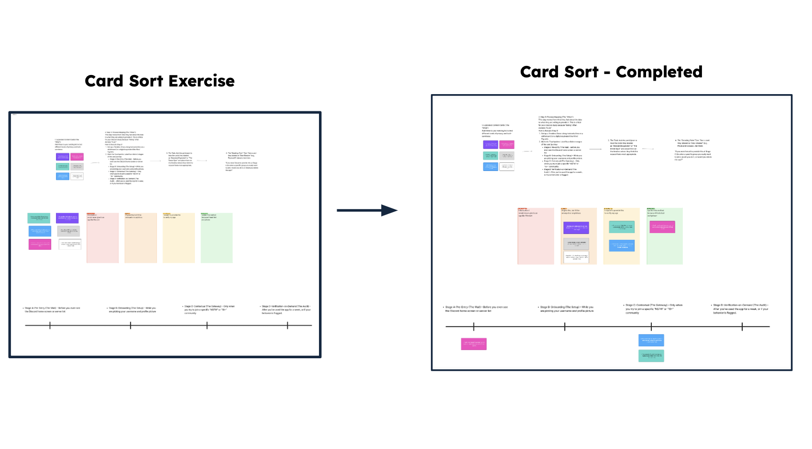
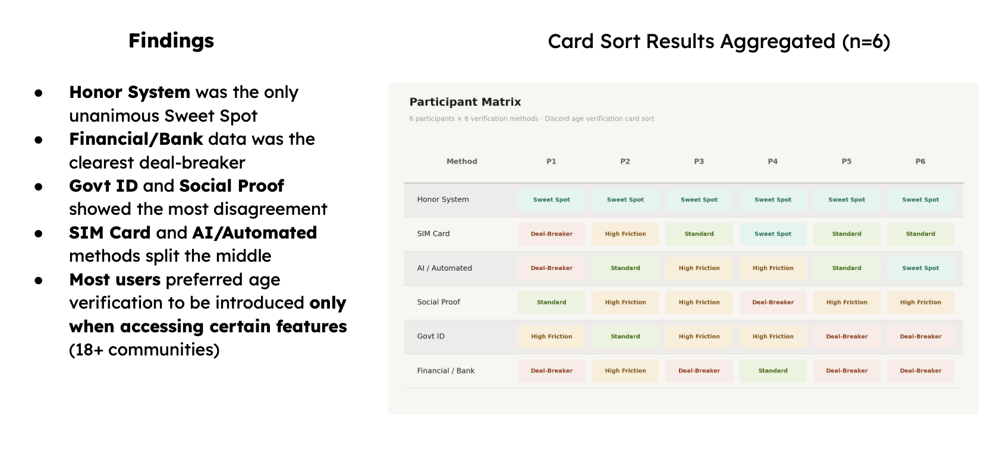
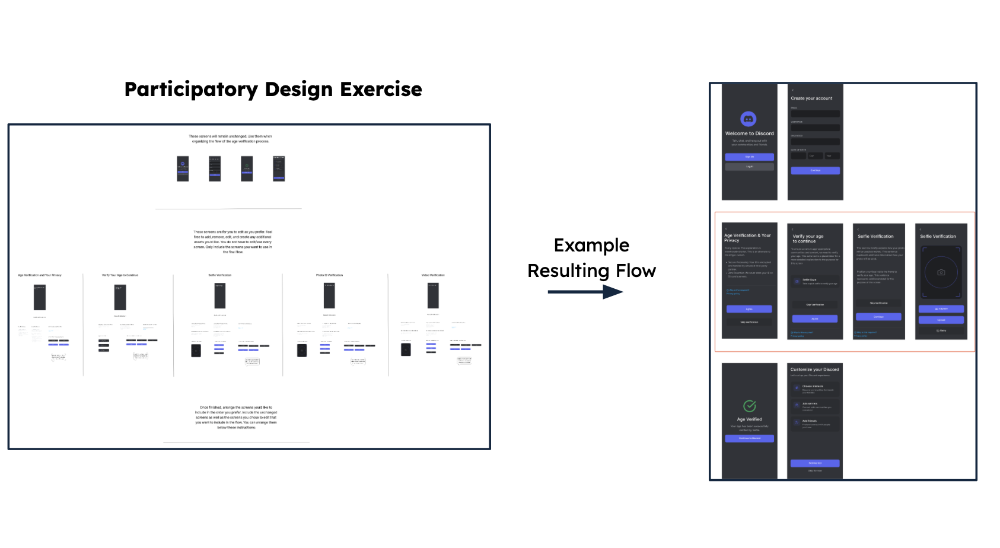
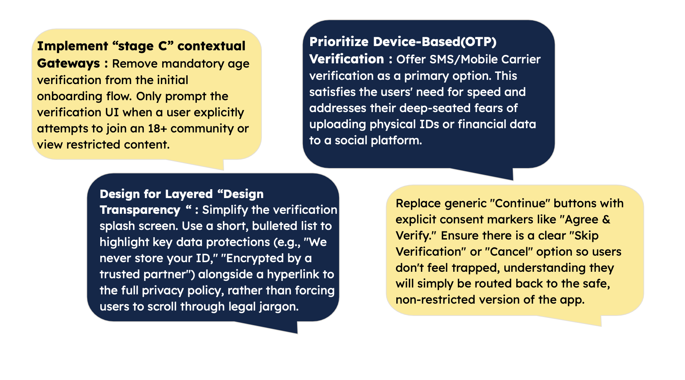

As digital platforms face increasing pressure to protect minors from mature content, age verification has become a critical UX challenge. For a community-centered platform like Discord—which relies on high speeds, agility, and trust—poorly implemented safety interventions can create friction, hesitation, and potential platform abandonment. This research project explored how to design age verification systems that successfully balance safety objectives with low risk perception and high user trust. Our goal was to determine preferred verification methods, the best time to introduce these checks during the user journey, and the acceptable level of transparency.
The Problem
Age verification requires the collection of highly sensitive personal data, which often triggers privacy concerns and skepticism toward data practices. When users do not understand why data is collected, how long it is stored, or who has access, their trust in the platform is easily disrupted.
Our research indicated that asking for biometric or government-associated data makes users fear their information might be permanently stored or transferred to third parties.
Because Discord is primarily a social and gaming platform, users do not expect or tolerate the strict verification techniques commonly accepted in financial or governmental services.
Research Approach
To understand user tolerance and design preferences, our team employed a mixed-methods approach:
Quantitative Survey: We captured baseline attitudes regarding privacy and trust among active Discord users (predominantly aged 21-34).
Evaluative Sorting Exercise: Participants ranked predefined verification concepts (e.g., Honor System, Gov ID, SIM Card, Facial Recognition) across a matrix of friction and trust.
Timeline Mapping: We evaluated exactly when users preferred to encounter verification during the onboarding journey.
Participatory Design: Using a mock Discord flow in Figjam, users customized and constructed their ideal age verification process using modular UI components (e.g., long/short privacy texts, explicit consent buttons) while utilizing a think-aloud protocol.
Key Findings
The "Sweet Spot" vs. Deal-Breakers: The "Honor System" (self-reporting) was the unanimous sweet spot for users, while device-based methods (OTP) were accepted as a reasonable compromise. Conversely, requests for financial data or governmental IDs were clear deal-breakers, with some users stating they would abandon the app entirely if forced to use them.
Contextual Timing is Crucial: Participants showed the highest level of acceptance when verification appeared only upon trying to access age-limited content, rather than upfront during account creation.
Transparency Backfires if Vague: Users rejected "walls of text" and preferred short, easily scannable privacy notices. However, vague terminology like "verified by a trusted third party" actively harmed trust, as users demanded to know exactly who the entity was.
The Need for Control: Providing explicit choices like "Skip Verification" or "Opt-out" made users feel more comfortable, increasing overall trust and making the system feel fairer.
Research Process & Artifacts

Participants mapping verification concepts across a friction and trust matrix.

Data synthesis revealing clear 'sweet spots' and user deal-breakers.

Users co-designing their ideal age verification flow using modular components.

Proposed design solution prioritizing user control, strategic timing, and transparency.
Conclusion & Design Implications
Age verification is not merely a technical problem; it is a design problem. This study demonstrated that user acceptance heavily depends on design choices such as timing, transparency, and perceived risk. To successfully implement age checks without alienating users, platforms must match the level of verification to the actual level of risk, provide concise explanations, and empower users with a sense of control over their data.